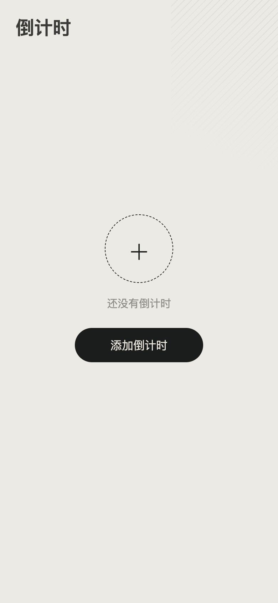
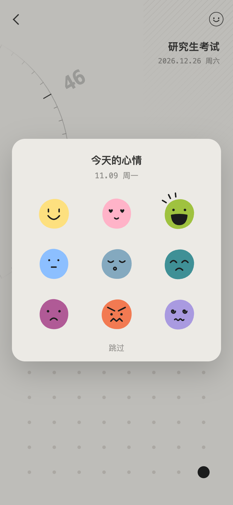
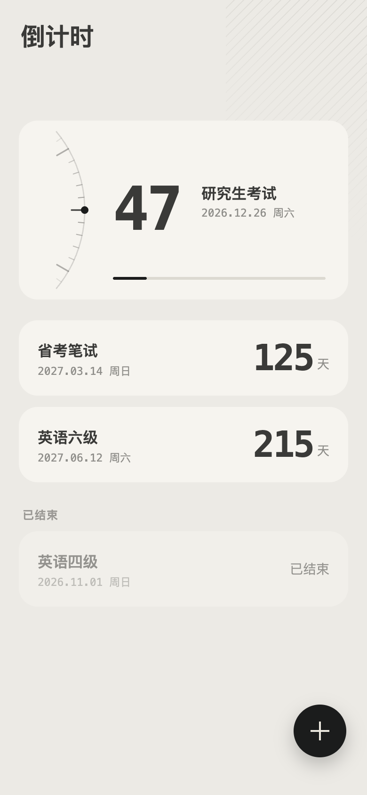

A 空列表：虚线圈加一句话和一个按钮，引导添加
→
点添加
B 新建：只填名称和目标日期
→
点开始

C 新建完直接进入详情，第一次打开该项目：选今天的心情
→
选心情
D 选完（或跳过）：时钟滚到今天，色点格记下心情；当天再进该项目不再弹
→
点左上返回

E 返回列表：想看哪个点哪个，进入时才弹它自己的心情
→
点卡片后，笑脸在详情里
F 详情右上笑脸：回看这个项目的心情
 B 新建：只填名称和目标日期
B 新建：只填名称和目标日期 D 选完（或跳过）：时钟滚到今天，色点格记下心情；当天再进该项目不再弹
D 选完（或跳过）：时钟滚到今天，色点格记下心情；当天再进该项目不再弹 F 详情右上笑脸：回看这个项目的心情
F 详情右上笑脸：回看这个项目的心情